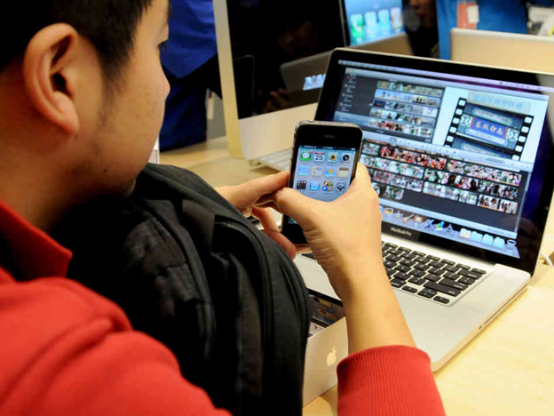

Компьютерді ұзақ уақыт қолдану көзге, денсаулыққа және әлеуметтік өмірге теріс әсер етуі мүмкін. Ол тәуелділікке, шаршауға және дене ауыруына әкелуі мүмкін.
Күн сайын бірнеше сағат бойы компьютерде ойын ойнау көзге және омыртқаға кері әсер етуі мүмкін.
